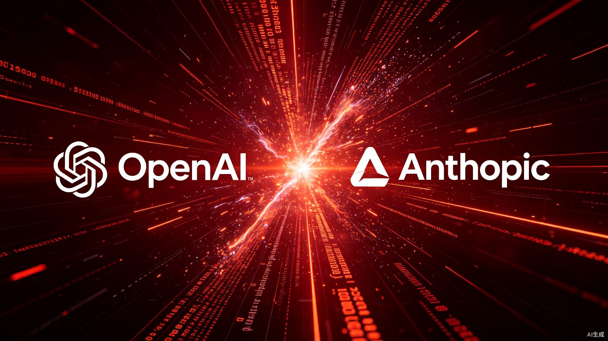

图源：AI生成
AI圈大佬Theo发了条推文，说GPT-5.6 Sol在Claude Code里跑得比Codex还顺。
按理说，OpenAI的产品负责人这时候该出来澄清一下，或者至少装没看见。结果你猜怎么着？
人家直接发了一条手把手教程，教开发者怎么把自家旗舰模型塞进对家的IDE里。
这波操作看得我愣了三秒。说实话，我见过商战，没见过这么野的。
先把时间线捋清楚。
两家的动作前后脚，间隔不到24小时。你要是跟我说这是巧合，我反正不信。
取消额度限制、重置配额，这些都好理解。打价格战嘛，谁都会。
真正让我坐直了的是第三步。OpenAI产品负责人Tibo在X上发了一条教程，标题大意是"5分钟把GPT-5.6 Sol接进Claude Code"。
我翻译一下这事的离谱程度。相当于麦当劳的CMO发视频，教你怎么在肯德基的APP里点麦辣鸡腿堡，还附赠优惠券。
商战打到这个份上，已经超越"竞争"了，这是赤裸裸的抢人。
"OpenAI这波操作，说白了不是大方，是急了，急着把自家模型塞进对家的地盘里，生怕开发者哪天顺手就把门牌看成了Claude Code，结果连API密钥都懒得换了。"
但这里有个更细的细节。Tibo发教程的由头，是Theo那条"GPT-5.6 Sol在Claude Code里明显比在Codex里更好"的推文。
正常情况下，一个产品负责人看到自家模型在竞品工具里表现更好，第一反应肯定是"我们的产品体验有问题，得改"。
Tibo的反应是："对啊，你说得对，我来教大家怎么操作。"
这说明什么？说明OpenAI的战略优先级已经变了。他们不再执着于"你必须用我的工具"，而是退而求其次，"你至少得用我的模型"。
这里需要讲清楚一个行业格局的变化。
以前的AI产业链大致分三层：模型层（OpenAI、Anthropic）、工具层（Cursor、Claude Code、Codex）、应用层（各种垂直产品）。模型层卖API，工具层做IDE，大家各赚各的。
但现在模型层开始往下探了。OpenAI把Codex并入ChatGPT，Anthropic力推Claude Code，本质上都是模型厂商在抢"开发者入口"。
为什么入口这么重要？因为你一旦习惯了某个工具的工作流，换成本极高。我用Claude Code用了三个月，所有的prompt习惯、代码库上下文、项目配置全都在里面。你让我换Codex？除非Codex强出一个数量级，否则我大概率懒得动。
OpenAI显然看明白了这一点。Codex并入ChatGPT之后，用户增长确实猛，但Claude Code的先发优势太明显了。很多开发者已经把Claude Code当成了默认工作流。
那怎么办？打不过就寄生。
你不是离不开Claude Code吗？好，我让我的模型住进去。你用着我的模型， gradually 就会对我的API产生依赖。等哪天Claude Code的额度用完，你顺手就会去开个Codex tab。
这就是Tibo那篇教程的真正目的。不是"帮用户获得更好体验"，是"把模型层变成工具层的底层基础设施"。
说到底，这场大战还是产品力的较量。咱们看看GPT-5.6和Claude Fable 5的真实对比。
| 测试项 | GPT-5.6 Sol | Claude Fable 5 |
|---|---|---|
| Agents' Last Exam | 52.7% | 40.5% |
| Coding Agent Index | 80 | 77.2 |
| SWE-Bench Pro | 64.6% | 80% |
| Toolathlon | 略低 | 略高 |
| 相对价格 | 约Fable 5的1/4 | 基准 |
数据来源：Artificial Analysis、各官方技术报告
数据很有意思。GPT-5.6 Sol在Agent任务和Coding Index上确实领先，但在更硬核的软件修复测试SWE-Bench Pro上，Fable 5还是明显更强。而且Fable 5在Toolathlon上也略胜一筹。
更关键的是价格。GPT-5.6 Sol的定价大约只有Fable 5的四分之一。这意味着OpenAI在走一条"低价换规模"的路，而Anthropic还在坚持"高价换质量"。
两条路线没有绝对的对错。但对于开发者来说，价格差四倍，性能差不太多的情况下，选择会倾向谁，其实很明显。
Fable 5的延期已经第三次了。原计划6月22日下架，推到7月12日，再推到7月19日。Claude Code的周额度提高50%也跟着顺延。
Anthropic在给用户的邮件里说，这是"为了让更多用户体验到Fable 5的能力"。
我翻译一下：我们不敢让付费用户失去Fable 5的访问权限，因为一旦他们习惯了GPT-5.6的价格和速度，可能就不回来了。
这是典型的"用户习惯绑架"。Fable 5的免费期拖得越长，用户对其能力的依赖就越深。但一旦免费期结束，面对四倍价差的竞品，有多少人会乖乖掏钱续费？
Anthropic的困境在于，他们的产品确实在某些维度上更强（SWE-Bench Pro 80% vs 64.6%），但市场似乎更认"性价比"。
Anthropic在延期Fable 5的同时，罕见地重置了Claude的额度。这在以前几乎没见过。通常额度重置是OpenAI的打法，Anthropic走的是"限量稀缺"路线。现在连Anthropic都开始用"送额度"来留人了，说明竞争压力确实大到不得不变。
很多自媒体把这场对决描述成"OpenAI和Anthropic在打价格战，用户薅羊毛"。
这太表面了。
如果只是价格战，OpenAI没必要教用户把模型接进Claude Code。降价就行了，干嘛帮对家工具导流？
真正的战场不在价格，在"开发者入口的控制权"。
OpenAI的逻辑很清晰：工具层我可能暂时打不过你，但我可以让模型层成为事实标准。你Claude Code做得再好，底层调的是我的API，长期下来谁掌握定价权？
这跟当年微软的策略有点像。Windows Phone打不过iPhone和Android，但微软把Office和Azure铺到了所有平台上。最后手机操作系统没赢，但云服务和办公软件赢麻了。
OpenAI现在就是在做同样的事。Codex是Windows Phone，GPT-5.6 API是Office。一个战场输了，换个战场继续打。
我目前的判断是，这场"额度大战"短期内不会停。
OpenAI已经尝到了甜头。取消5小时限制后，Codex的用户活跃度暴涨，Tibo在X上连发几条庆祝推文。只要数据好看，额度限制大概率不会恢复，或者会以更松的形式存在。
Anthropic这边，Fable 5的7月19日截止日期估计还会再延。不是他们想延，是不敢不延。一旦Fable 5的免费窗口关闭，用户流失速度可能会超出预期。
更长远的来看，我关心的是一件事：模型层和工具层的边界会不会彻底消失？
OpenAI已经把Codex并入了ChatGPT，Anthropic的Claude Code也越推越重。两家都在从"卖模型"往"卖工作流"转型。如果模型厂商自己都做工具了，Cursor、Replit这些第三方工具怎么办？
答案可能很残酷。要么被收购，要么被边缘化，要么被迫绑定某一家模型厂商的生存。
如果你是普通开发者，这波大战对你最大的影响，其实不是"能薅多少免费额度"。
是"你的工作流会被谁控制"。
我以前同时用Claude Code和Cursor，觉得挺自由的，哪家强就用哪家。但现在越来越发现，工具之间的迁移成本在指数级上升。不是因为功能差异，是因为数据沉淀。三个月的代码库上下文、项目记忆、prompt习惯，全绑在一个工具里。
OpenAI教用户把GPT-5.6接进Claude Code，表面上给了开发者更多选择。但长期看，这是在加速"模型层统一化"的过程。当所有工具底层都调同一个API时，所谓的工具竞争，就变成了壳的竞争。
壳是可以换的。API换起来就麻烦了。
所以我的建议是，趁现在各家还在送额度，多试几家，保持工作流的灵活性。别把所有鸡蛋放在一个篮子里，也别把所有代码上下文绑在一个工具上。
因为这场大战的终局，可能不是某一家赢了，而是模型层赢了工具层。到那时候，开发者真正拥有的选择权，可能比现在更少。
谢谢你看我的文章。